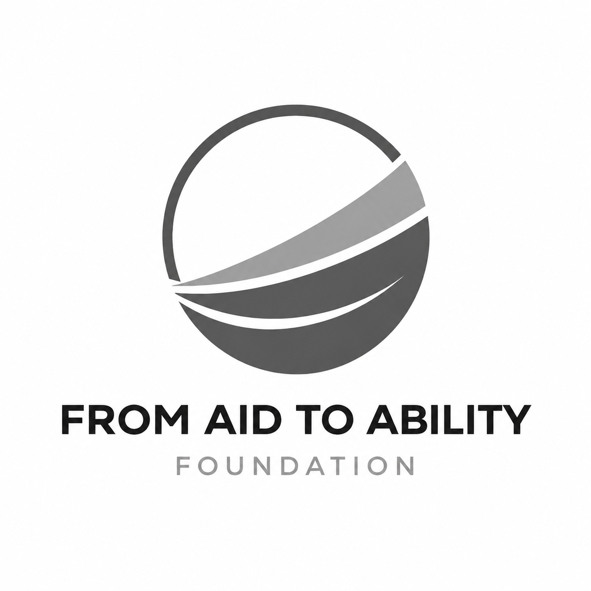
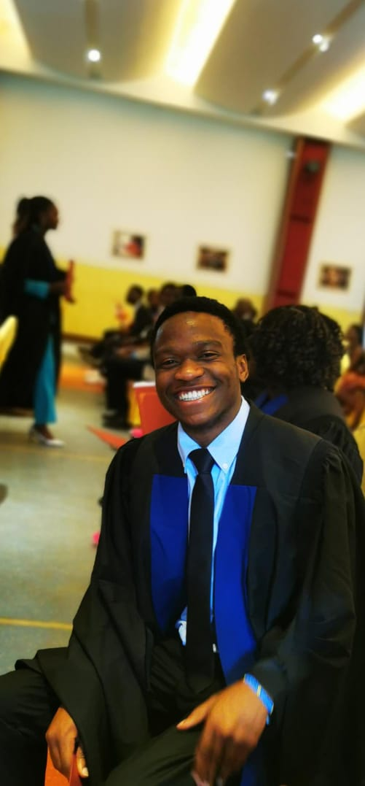

From Aid to Ability Foundation (FAAF)
A non-profit, community-based organization dedicated to transforming the development paradigm in Malawi. We move individuals and communities from cycles of aid dependency to sustainable self-reliance through skills development, mentorship, and economic opportunity creation.
A response to a systemic design flaw
The impetus for FAAF emerged from a systemic observation: despite decades of development interventions and billions in external assistance, many Malawian communities remain structurally dependent on aid. Food arrives; food stops; hunger returns. Wells are drilled; pumps break; water access collapses. Schools are built; teachers leave; education stagnates.
Aid serves a vital purpose in acute crisis. But when temporary relief becomes permanent condition, it creates a paradox: the very mechanism designed to alleviate suffering becomes the barrier to overcoming it. Communities learn to wait. Individuals learn to receive. A dependency mindset replaces an agency mindset.
This is not a failure of compassion. It is a failure of design. FAAF was established to correct that design flaw. We believe sustainable development is not measured by what communities receive, but by what they can create, build, and sustain without external support. Our founding premise is simple but radical: the goal of every development intervention should be to make itself unnecessary.

From Aid To Ability Foundation
Boaz Selemani — from lived experience to lasting change
Born on October 25, 2000, in Uvira, Democratic Republic of Congo, Boaz Selemani fled with his family to Malawi at age 10 and was resettled in Dzaleka Refugee Camp in Dowa District. He grew up watching aid trucks come and go, learning to wait in ration lines, and witnessing his community organize around donor cycles rather than production cycles. He learned what aid dependency looks like from the inside, and he refused to accept it as a permanent reality.
At 16, Boaz became a member of the Children's Parliament under Plan Malawi, advocating for the rights of children in Dzaleka. At 18, he visited more than four villages across Dowa District, teaching Bible studies and empowering children with hope, life skills, and a vision for futures they could build themselves. Parents and peers called him "A Boy from Heaven" for the hope and self-reliance initiatives he brought to children through his programs.
Boaz founded FAAF in 2020 at age 20. In 2023, he enrolled at Malawi Assemblies of God University to pursue a Bachelor's degree in Social Science in Community Development. Today, at 25, he represents a generation of African youth who refuse to accept a future defined by perpetual dependency. His vision is not merely to implement programs, but to build strong institutions and empowered communities where external support is no longer the foundation of progress.

Boaz Selemani
Founder & Chief Executive Officer
Malawi's development paradox
Malawi faces a development paradox. The country receives substantial international assistance, yet remains one of the poorest nations in the world. The missing link is not resources — it is relational infrastructure: the skills, mentorship networks, and economic opportunities that convert potential into productivity.
| Challenge | Evidence | Consequence |
|---|---|---|
| Youth unemployment | Over 50% of Malawian youth (15-35) are unemployed or underemployed | Idleness, migration, crime, political manipulation |
| Women's economic exclusion | Women perform 60% of agricultural labor but own less than 20% of land; female entrepreneurship faces capital and cultural barriers | Intergenerational poverty, household instability, limited investment in children |
| Skills mismatch | Vocational training often teaches obsolete skills with no market demand | Trained but unemployable youth; wasted investment; cynicism about development |
| Mentorship gap among boys | High rates of father absence due to economic migration, mortality, and family breakdown; few structured male mentorship programs | School dropout, substance abuse, gender-based violence, perpetuation of poverty cycles |
| Aid dependency culture | Communities organize around aid cycles rather than production cycles; external funding drives priorities rather than local needs | Chronic vulnerability, weak local institutions, unsustainable development |
FAAF does not treat these as isolated problems. We recognize them as interconnected symptoms of a single systemic failure: the failure to invest in human capability as the foundation of all other development.
Our path from aid to ability
If we equip individuals with market-relevant skills, connect them to quality mentorship, and create pathways to apply those skills in real economic contexts, then they will generate sustainable income, build resilient livelihoods, and transform their communities from dependent recipients into self-reliant producers.
And if we specifically invest in young boys' mentorship alongside women's economic empowerment, then we address both sides of the gender equation — creating male allies for women's advancement while preventing the social dysfunction that undermines community stability.
And if we design every program with a deliberate exit strategy — transitioning from direct implementation to advisory support to full community ownership — then communities will develop the institutional capacity to sustain and replicate progress without perpetual external support.
Therefore, the ultimate measure of FAAF's success is not how many people we serve, but how many communities no longer need us.
See Our ProgramsA Malawi built on ability, not aid
We envision a Malawi where youth unemployment is addressed through market-driven skills and enterprise creation, where women exercise full economic agency, where children grow up in environments where "I can't" is replaced with "I can learn," and where communities possess the internal capacity to identify challenges, mobilize resources, and implement solutions.
This is not utopian. It is achievable through disciplined investment in human capability, relational infrastructure, and institutional design.